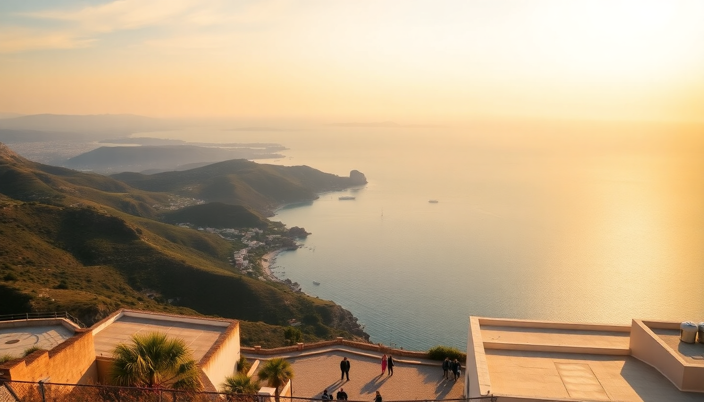

7-Day Greece Itinerary: Athens, Crete & Rhodes

We landed in Athens with a loose plan: three islands in seven days. That meant ferry schedules, quick packing, and skipping the fluff. This itinerary covers Athens, Crete, and Rhodes — three completely different Greek experiences — without the tourist-trap filler. Here’s exactly how we did it, what we’d do again, and what we’d skip.
Is seven days enough for Athens, Crete, and Rhodes?
Barely, but yes — if you move fast and don’t overpack each day. We spent two nights in Athens, two in Crete (Heraklion area), and two in Rhodes (Old Town). The ferries between them eat half a day each, but the connections are reliable. We used the high-speed ferry from Piraeus to Heraklion (Seajets, about 4.5 hours), then a slower Blue Star ferry from Heraklion to Rhodes (about 5 hours). Book ferry tickets at least a week ahead in summer — they sell out.
- Athens – 2 nights (land day 1, full day 2, morning day 3)
- Crete (Heraklion) – 2 nights (arrive afternoon day 3, full day 4, morning day 5)
- Rhodes (Old Town) – 2 nights (arrive afternoon day 5, full day 6, depart day 7)
What should I actually do in Athens?
Skip the morning line at the Acropolis. We went at 3:30 PM on a Tuesday and walked right in. The Parthenon is impressive, but the real highlight for us was the Acropolis Museum — cool, well-labeled, and air-conditioned. We stayed at Hotel Attalos near Monastiraki Square. The rooftop bar has a direct view of the Acropolis lit up at night, and the price was half of what the Plaka hotels charge.
- Acropolis – Go late afternoon for smaller crowds and better light
- Acropolis Museum – Don’t skip the video reconstruction of the Parthenon
- Monastiraki Flea Market – Fun to wander, but haggle hard on the souvenirs
- Street Souvlaki – Grab a pork gyros at O Thanasis for under €4
Is Crete worth the ferry time?
Crete was the surprise of the trip. We almost cut it to save time, but the island is massive and feels like a different country. We based ourselves in Heraklion because the ferry port is right there. The Knossos Palace ruins are a 15-minute bus ride from the center — worth it for history buffs, but the site is more reconstructed than we expected. The real magic was the food. We ate at Peskesi (traditional Cretan, farm-to-table) and Ippokampos (seafood by the old Venetian harbor).
- Knossos Palace – Go early (8 AM) or late (5 PM) to avoid tour groups
- Heraklion Archaeological Museum – Better than the palace itself for context
- Raki – Free shot at most tavernas after dinner; it’s strong, sip it
- Chania – If you have an extra day, drive west. We didn’t, and we regret it
What’s the best way to see Rhodes in one day?
Rhodes Old Town is a medieval maze, and one full day is enough to hit the highlights. We stayed at Casa Antica inside the Old Town walls — a converted 13th-century building with stone walls and a small courtyard. The Palace of the Grand Master is the main attraction, but the Street of the Knights is more atmospheric. For lunch, we walked to Kostas for souvlaki (tiny place, cash only, locals only). In the afternoon, we took a bus to Lindos (45 minutes, €5) to see the acropolis and the beach.
- Palace of the Grand Master – Give it 1.5 hours, skip the audio guide
- Street of the Knights – Quietest in the early morning before 9 AM
- Lindos – The climb up to the acropolis is steep; wear decent shoes
- Elli Beach – If you want a swim without leaving town, it’s a 10-minute walk from the Old Town gate
How do I get between islands without wasting time?
Ferries are the only practical option unless you fly. We flew into Athens and out of Rhodes (one-way rental car not needed). The Athens–Crete leg is best done on a high-speed ferry like Seajets or Hellenic Seaways — pricier but saves two hours. The Crete–Rhodes leg is longer; we took the overnight Blue Star ferry and booked a cabin (€40 extra, worth it for a shower and real bed). Bring snacks and a neck pillow; the cafeteria food is overpriced.
- Athens to Crete – Seajets high-speed, 4.5 hours, book ahead
- Crete to Rhodes – Blue Star overnight, 5 hours, book a cabin
- Rhodes to airport – Taxi from Old Town is €15 flat rate
- Ferry tickets – Book via Ferryhopper; avoid third-party kiosks at Piraeus
Where should I eat in each city?
We ate well in all three places, but Crete was the standout. In Athens, skip the tourist traps in Plaka and walk five minutes to Psiri neighborhood. In Heraklion, the old harbor restaurants are fine but overpriced — go two blocks inland. In Rhodes, the Old Town restaurants along Sokratous Street are mostly average; we had our best meal at Mavrikos in Lindos.
- Athens – O Thanasis (Monastiraki) for gyros, Ama Lachei (Psiri) for modern Greek
- Crete – Peskesi (Heraklion) for lamb, Ippokampos for grilled octopus
- Rhodes – Kostas (Old Town) for cheap souvlaki, Mavrikos (Lindos) for a splurge
FAQ
What’s the best time of year for this itinerary? Late May or early September. June through August is hot (35°C+), crowded, and expensive. We went in mid-September and had warm swimming weather but shorter lines. Ferry schedules are more limited in October.
Do I need to book ferries and hotels in advance? Yes, especially in summer. We booked ferries two weeks ahead and hotels three weeks ahead. Last-minute bookings in July and August can cost double. For hotels, use Booking.com with free cancellation in case a ferry gets canceled.
Is it worth renting a car on Crete or Rhodes? On Crete, yes — if you want to see Chania or the beaches. On Rhodes, no. The bus system covers Lindos and the east coast easily, and parking inside the Old Town is a nightmare. We rented a car in Crete for one day (€35 from Hertz at the port) and used buses everywhere else.
Conclusion
- Athens – Two nights is enough. Hit the Acropolis late afternoon, eat in Psiri, and stay near Monastiraki.
- Crete – Base in Heraklion if short on time. Knossos in the morning, seafood at Ippokampos for dinner.
- Rhodes – One full day in Old Town plus a half-day trip to Lindos. Stay inside the walls for the atmosphere.
- Ferries – Book high-speed for Athens–Crete, overnight cabin for Crete–Rhodes.
- Food – Skip the harborfront restaurants in Heraklion and Rhodes Old Town. Walk inland for better food and lower prices.